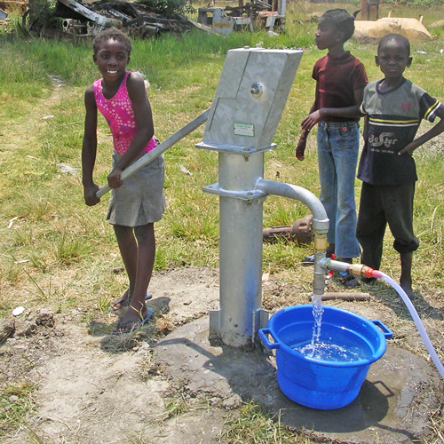
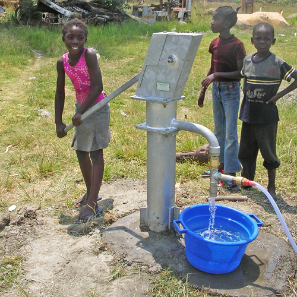

We are an indigenous company with many years of experience under our belt, we have been in the drilling business for over 30 years, We have worked across many sectors from private to Government agencies. The company was established in 2011 and has worked across the different states of Nigeria from the sedimentary to basement formations.
Strata & Structures Limited was established with clear objectives of providing high quality professional services to the environmental, civil and geotechnical engineering community. Strata & Structures Limited has completed a wide range of environmental,geotechnical and construction projects for clients ranging from Governments, Foreign companies, Corporate, Individuals and other firms offering similar services.
There is a saying within the organization at Strata & Structures Limited,
"As long as there is soil below our feet, we'll provide you with water. It does not matter how deep we have to drill".Facilitated by the company's vast number of drilling rigs strategically located at various geographical regions in the country, we can ensure effective response to water requirements of our clients.
This is aided by the amount of our very experienced drillers, each with thousands of operation hours in the field. Drillers routinely undertake training courses worldwide, to update them on current global technologies.
Strata & Structures Limited sources all the materials required for this service in-house, ensuring you get one of the best quality control possible and also ensuring a high success rate. With some of the latest and biggest water drilling rigs in the nation, Strata & Structures Limited delivers to the highest standards
No matter what obstacles we face, our Team finds a safe, efficient and innovative way to meet the objectives of the project. And we bring over 35 years of drilling experience to each and every project.
With customized drills that deliver the industry's best surface, underground, and specialty drilling, our team gets the job done in even the most challenging conditions. Lightweight and powerful, our drills are modified to accommodate different sizes, depths, and any other requirements for your project to deliver safe, optimal performance for every challenge.
But knowledge and experience isn't everything. We know that we are strongest when we work as part of a team.
That's why we focus on building strong relationships with our clients based on honesty, integrity, respect, and open communication. We welcome feedback from our clients and employees, and we continually evolve and adapt to satisfy changing industry standards. A strong partnership is the key to not only meeting and exceeding expectations, but delivering the best possible service.
The end result? A history of providing long-term, safe, and productive drilling services.
We offer:
- Customized equipment that deliver the industry's best surface, underground, and specialty drilling.
- Lightweight, highly portable drills that excel in depth and power
- Highly trained, skilled operators
- Minimal environmental impact
- Trusted relationships with local communities
- Innovation and determination
- Fabrication & construction of durable overhead and underground storage tanks.
- Construction of Water treatment plants.
- Borehole Servicing & Flushing.
- Water Reticulation
- Consultancy.
- General Supplies
- Civil Construction